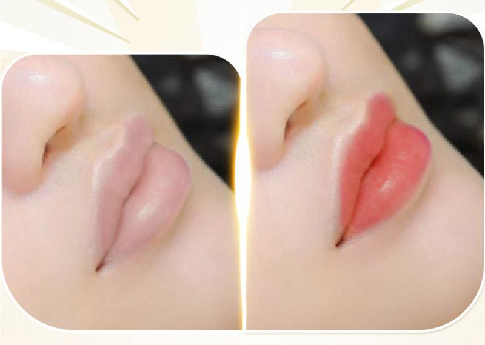

Phun Môi Màu Cam Đào Có Đẹp Không? Hợp Với Ai?
Nếu hồng đào mang đến vẻ dịu dàng thì cam đào lại tạo cảm giác trẻ trung, tươi tắn và có phần hiện đại hơn. Đây là màu môi được nhiều khách hàng từ 20-35 tuổi lựa chọn vì dễ phối trang điểm và phù hợp với nhiều tông da.
Tuy nhiên, không phải ai cũng hợp với màu cam đào. Việc lựa chọn màu môi cần dựa trên nền môi, màu da và phong cách cá nhân để đạt hiệu quả tự nhiên nhất.
Trong bài viết này, ELLY PMU sẽ giúp bạn hiểu rõ màu cam đào có phù hợp với mình hay không.
Phun Môi Màu Cam Đào Là Gì?
Cam đào là sự kết hợp giữa sắc cam nhẹ và ánh hồng tự nhiên. Sau khi hồi phục, môi thường có màu tươi tắn, trẻ trung, không quá rực và phù hợp với xu hướng trang điểm hiện đại.
Đây là màu được nhiều khách hàng văn phòng và các bạn trẻ yêu thích vì giúp gương mặt sáng hơn nhưng vẫn giữ được nét tự nhiên.
Ai Phù Hợp Với Màu Cam Đào?
Người Có Làn Da Sáng
Da sáng là nhóm phù hợp nhất. Màu cam đào giúp da nhìn hồng hào hơn, gương mặt rạng rỡ và tăng vẻ trẻ trung.
Người Có Da Trung Bình
Nếu kỹ thuật viên điều chỉnh sắc độ phù hợp, nhiều người có làn da trung bình vẫn có thể lựa chọn màu này. Điều quan trọng là không nên chọn màu quá sáng nếu nền môi còn thâm.
Người Thích Trang Điểm Nhẹ
Nếu bạn thường makeup tự nhiên, đánh má hồng hoặc thích phong cách Hàn Quốc, cam đào là lựa chọn rất phù hợp.
Trường Hợp Nên Cân Nhắc
Nếu môi thâm nhiều hoặc màu không đều, kỹ thuật viên sẽ kiểm tra nền môi trước khi quyết định có cần xử lý thâm hay điều chỉnh màu hay không.
Ưu Điểm Của Màu Cam Đào
- Nhìn trẻ hơn.
- Không quá nổi bật.
- Phù hợp nhiều độ tuổi.
- Dễ phối trang điểm.
- Không lỗi mốt.
Đây là màu được lựa chọn nhiều trong nhiều năm gần đây vì vừa tươi vừa không tạo cảm giác quá đậm.
Cam Đào Có Làm Da Trắng Hơn Không?
Màu môi không làm thay đổi màu da. Tuy nhiên, khi chọn đúng sắc độ phù hợp, đôi môi tươi tắn có thể tạo cảm giác gương mặt rạng rỡ và có sức sống hơn.
Màu Cam Đào Giữ Được Bao Lâu?
Thông thường, màu môi có thể duy trì trong nhiều năm tùy cơ địa, chất lượng mực, tay nghề kỹ thuật viên và cách chăm sóc sau phun. Theo thời gian, màu sẽ nhạt dần tự nhiên.
Chăm Sóc Sau Khi Phun
Để màu môi ổn định hơn, bạn nên dưỡng môi theo hướng dẫn, không bóc lớp bong, uống nhiều nước, hạn chế hút thuốc và bảo vệ môi khi ra nắng.

Những Hiểu Lầm Thường Gặp
Cam Đào Chỉ Hợp Người Trẻ
Không đúng. Nếu điều chỉnh sắc độ phù hợp, khách hàng trung niên vẫn có thể lựa chọn.
Cam Đào Quá Chói
Sau khi hồi phục hoàn toàn, màu sẽ dịu hơn nhiều so với giai đoạn đầu.
Cam Đào Không Hợp Da Ngăm
Không hoàn toàn đúng. Điều quan trọng là lựa chọn đúng tông cam và đánh giá nền môi trước khi thực hiện.
Checklist Trước Khi Chọn Cam Đào
Thích phong cách trẻ trung.
Muốn môi luôn tươi tắn.
Ít đánh son hằng ngày.
Được kỹ thuật viên tư vấn theo màu da và nền môi.
Câu Hỏi Thường Gặp
Môi thâm có phun màu cam đào được không?
Tùy mức độ thâm. Một số trường hợp cần xử lý nền môi trước.
Cam đào hay hồng đào đẹp hơn?
Không có màu nào đẹp hơn tuyệt đối. Cam đào phù hợp với người thích vẻ năng động, trong khi hồng đào mang đến cảm giác dịu dàng hơn.
Có cần đánh son sau khi phun không?
Không bắt buộc. Nhiều khách hàng lựa chọn cam đào vì môi đã có màu sắc tự nhiên sau khi hồi phục.
Kết Luận
Cam đào là một trong những màu môi được yêu thích nhờ vẻ đẹp trẻ trung, tươi tắn và dễ ứng dụng trong cuộc sống hằng ngày. Tuy nhiên, để đạt kết quả đẹp nhất, bạn nên lựa chọn màu dựa trên nền môi và sự tư vấn của kỹ thuật viên thay vì chỉ theo xu hướng.